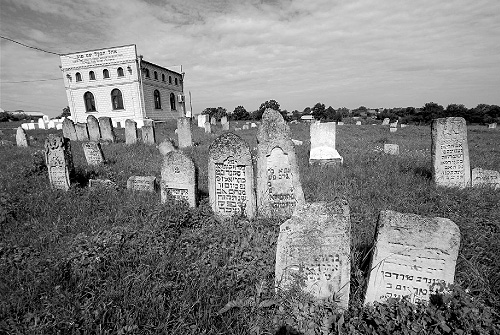

The Baal Shem Tov Says Torah in Gan Eden
“I remained alone with the Baal Shem Tov. I bitterly asked him why I had been brought into Gan Eden and not given a place. He said, ‘Because you gave your word and did not keep it.’” * Presented for Shavuos, the yahrtzait of the Baal Shem Tov.

PART I
Even after the Baal Shem Tov became publicly known, many did not look favorably upon him. At first, he dealt mainly with the masses, with many people going to him for help with health and other problems. It was only later that his tremendous knowledge of Torah and his avodas Hashem became known. Recently, it was discovered that in the records of the town of Mezhibuzh the tzaddik is referred to as “the doctor Baal Shem Tov.”
Not surprisingly, when the Baal Shem Tov arrived in Mezhibuzh, having been invited by the heads of the k’hilla, there were some people who were not happy to see him. It wasn’t only the learned ones who opposed him, but even some of the lofty individuals who were known as members of an elite group of pious men. Their welcome wasn’t friendly. Among them were R’ Zev Wolf Kitzes and R’ Dovid Furkas.
In general, people were skittish after the Sabbatean debacle. They were wary of charlatans who crowned themselves as “baalei shem” and fooled the people. Some of these shady characters brazenly used holy names. Aside from that, even if the man was a genuine tzaddik, they did not think it seemly for him to take on this lofty title of “baal shem.”
Then one day, something happened which drew even the dissenters towards the great light.
PART II
Izik was one of the outstanding scholars of Mezhibuzh. He was almost always sitting in the beis midrash, bent over his Gemara. His avodas Hashem was also serious and superlative. His pleasant demeanor endeared him to everyone.
One day, Izik became sick. His illness worsened day by day. He tossed in bed, writhing in pain. His teachers went to visit him, for they knew that Chazal say that one who visits a sick person removes one sixtieth of his illness.
They sat near him, but since he was distracted by his suffering he was unable to talk to them in learning. “Oy,” he said. “If only the Baal Shem could visit me …”
They knew he was referring to the famous Baal Shem who had come to Mezhibuzh not long ago and was known as a healer and wonder worker. His teachers were not pleased with this sentiment. They believed in the power of t’filla and a chapter of T’hillim said wholeheartedly, not in segulos provided by a Baal Shem who may or may not have been legitimate.
Izik tried to convince them otherwise. Only when they saw how much it meant to him, and when they heard that the doctor was very concerned about his condition, did they reluctantly agree to a meeting between their sick student and the Baal Shem.
“However,” they said, setting this condition, “whatever he tells you, you must tell us.”
PART III
The Baal Shem Tov’s face shone as he kissed the mezuza in Izik’s house. His noble appearance immediately impressed Izik. The tzaddik entered the room and began speaking to him. A few moments earlier, one of the boys in the house had hidden under the bed in order to hear what would be said.
As they spoke, Izik understood that his days were numbered and that the master did not have a segula for his illness. The tzaddik did not speak of death but about rectifying his life.
“Although you have many fine qualities, this matter (and the Baal Shem Tov specified what it was) has not yet been corrected.”
Izik turned pale for only he knew about that matter that needed correction. He realized that his life history was known to the tzaddik and nothing was a secret.
“For a long time, I sought an opportunity to rectify the matter,” said Izik, “and now, as I am on the threshold of the world to come, what should I do?”
The tzaddik thought for a moment and then said, “Don’t worry Izik’l. I will see to it that this matter won’t hold you up. I promise you that you will enter Gan Eden.”
The tzaddik said this in a confident tone and Izik looked pleased. He accepted the judgment lovingly.
Before the Baal Shem Tov left the room, he ordered him not to tell anyone what they had spoken about.
A few hours later, his teachers visited him in order to hear about the wonder worker’s visit. They wanted to hear firsthand whether the rumors about his segulos were true. Izik did as he had been told and did not say a word. “I promised to keep it a secret,” he said. This made them even more suspicious.
At that moment, the boy who had hidden under the bed made an appearance. He told them what had transpired, leaving out nothing of the conversation. The rabbis looked at Izik in astonishment. They had never heard a conversation like that in their lives!
“Is what he says correct?”
Izik nodded.
In case they thought the boy had fabricated a story, now they knew that the wondrous conversation had, indeed, taken place. On the one hand, they were impressed by the Baal Shem Tov’s confidence, with his promise uttered like someone before whom the pathways of heaven are visible. What person has knowledge of who will live and who will die, who will enter Gan Eden and who will not?
What could they say? They decided to ask Izik to swear that he would come after his death and tell them what had happened to him, so they would know whether the Baal Shem Tov’s words had materialized.
PART IV
Not long afterward, the Jews of Mezhibuzh followed Izik’s casket, as the young man was laid to rest. A few days went by before Izik came in a dream to his teachers. His face was shining. He told them that he had risen to the supernal chambers and his fate was quickly determined to be Gan Eden, for he had spent all his life on Torah, prayer and fear of heaven. Two angels led him to the gates of Gan Eden and escorted him in with great respect.
“Since the angels did not show me to my place, I began to wander here and there, from place to place within Gan Eden. I looked for and found an empty place to sit but I was quickly moved from there, because it was reserved for one of the tzaddikim. I kept wandering and as time passed I became bothered and ill at ease.
“Then, I saw that everyone was heading to a different heavenly chamber. I joined them. Since I was feeling upset, as soon as I entered the new chamber I went ahead and sat down next to a large table, but even here, I was pushed out of my seat. I was greatly distressed.
“Suddenly, I saw the Baal Shem Tov sitting there and saying deep divrei Torah. He asked a difficult question to the heavenly yeshiva who tried to answer it but were unable to do so. He finally gave an amazing answer himself,” and Izik repeated the question that had been posed in Gan Eden and the answer.
“Then everybody returned to their original places and I remained alone with the Baal Shem Tov. I bitterly asked him why I had been brought into Gan Eden and not given a place. He said, ‘Because you gave your word and did not keep it.’
“I immediately remembered that I had promised you that I would come and tell you what happened to me up above. So I have come to you in a dream.”
PART V
That Shabbos, two new guests attended the third Shabbos meal that took place in the Baal Shem Tov’s beis midrash. The tzaddik sat at the head of the table with his face shining with holiness. Around him sat the leading members of the chevraya kadisha (holy brotherhood). There were also ordinary residents of the town.
The tzaddik asked a difficult, scholarly question and asked the talmidim to give him an answer. Since the two guests were familiar with the question, the same one that had been asked in Gan Eden, as Izik had related to them, they knew the answer and they said it out loud.
The tzaddik looked at them gravely and said, “I know that the deceased Izik told you what happened.”
From that point on, R’ Zev Wolf Kitzes and R’ Dovid Furkas became two of the Baal Shem Tov’s closest disciples.
Menachem Ziegelboim. "The Baal Shem Tov Says Torah in Gan Eden." Beis Moshiach, no. 835 (May 22, 2012).